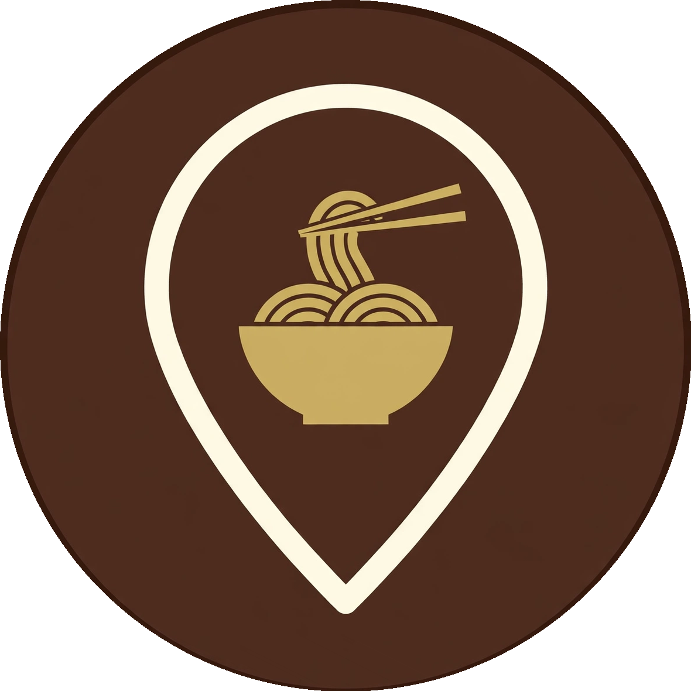

Sobamapそば・うどん記録行った店のレポと、まだ行っていない店のリストを、一枚の地図で。
読み込み中…
店の追加・編集は data.json の shops に1件足すだけ。状態は visited（訪問済み）／wishlist（行きたい）、種別は soba／udon、形式は standing（立ち食い）／seated（着席）。
行った店には訪問日・食べた一杯・星評価・ひとことレポを残す。行きたい店には「なぜ気になるか」を書いておく。
座標は住所をもとに国土地理院の住所検索で確認（番地レベル）。営業時間・定休日は変わることがあるので、行く前に公式情報の確認を。Sobamap は個人の記録用アプリです。